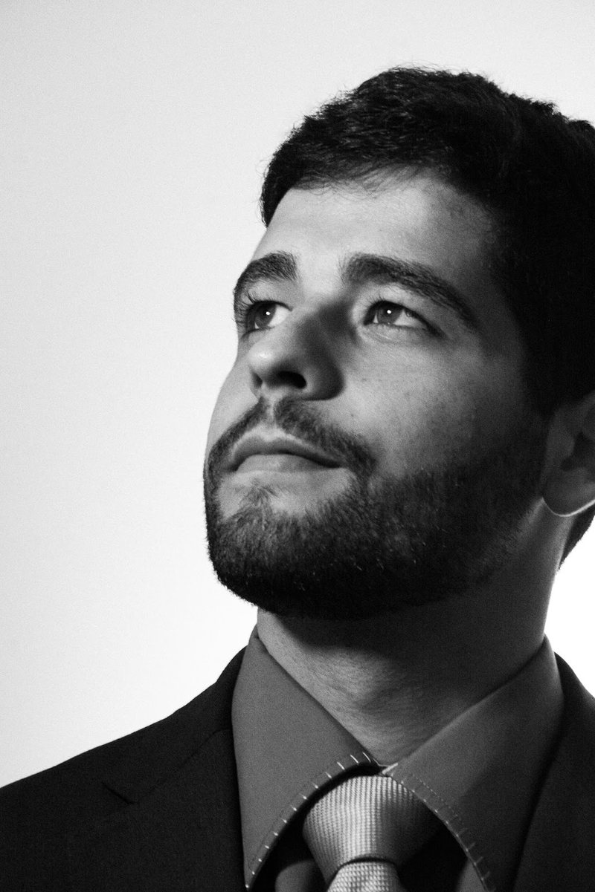

Início · Sobre
Daniel Rasec Rocha Silva, advogado.
OAB/BA 61.649. Formado pela Universidade Católica do Salvador em 2018, pós-graduado em Direito Digital e fundador da Daniel Rasec Advocacia, com atuação em Direito do Consumidor. Cada informação desta página traz a fonte.
Advogado
Quem é
O número aparece no antigo site dele — “Daniel Rasec. / OAB/BA 61.649” — e no primeiro logotipo do escritório. Em 2026, a OAB/SC deferiu a inscrição suplementar.
Ver o antigo site no arquivoNa apresentação do antigo site, ele se descrevia assim:
“Advogado, formado pela Universidade Católica do Salvador, atuante na área do Direito do Consumidor e pós-graduado em Direito Digital.”Antigo site, 2021 · ver no arquivo
Estudos
Formação
- Graduação em DireitoUniversidade Católica do Salvador (UCSAL), formado em 2018.
- Pós-graduaçãoPós-graduado em Direito Digital.
- Exame de OrdemAprovado e inscrito na Ordem: OAB/BA 61.649.
Fundador
O escritório próprio
- Empresa: Daniel Rasec Rocha Silva Sociedade Individual de Advocacia, com ele como titular.
- Abertura: 10/06/2021, segundo o cadastro na Receita Federal.
- Endereço atual: Av. Tancredo Neves, 1033, sala 901, Caminho das Árvores, Salvador.
- Marca: Daniel Rasec Advocacia, com o “R” serifado em moldura quadrada.
“Hoje celebramos 1 ano do nosso novo escritório. Mais do que um novo espaço físico, este lugar representa crescimento, dedicação, estudos, desafios superados e muitos sonhos transformados em realidade.”Instagram @danielrasec.adv · ver o post
Publicações
Artigos e palestra
BNews, 14/03/2020
Artigo “O Dia do Consumidor e 7 direitos que você tem e não sabe”. Ler
BNews
Artigo “O que ninguém te fala sobre negativação no SPC e Serasa”. Ler
II Simpósio da ABRADECON
Palestrante do Painel 2, Jovem Advocacia: “A nova forma de advogar”. Ver o anúncio
Legendas sobre direitos do consumidor em @danielrasec.adv. Abrir o perfil
Na voz dele
Como ele fala
Ele fala com o consumidor de “você”, de forma direta, e termina as explicações com um conselho prático.
“Nesse sentido, vou listar sete práticas abusivas e direitos assegurados para que você fique sempre atento.”
Artigo no BNews, 2020 · ver a fonte
Transparência
Como conferir
- Inscrição: antigo site e logotipo (arquivo da internet) e inscrição suplementar no Diário Eletrônico da OAB.
- Escritório e data de abertura: cadastro na Receita Federal.
- Formação e palestra: anúncio do II Simpósio da ABRADECON.
- Artigos: BNews.
Dúvidas frequentes
Perguntas comuns
Qual é o registro do Dr. Daniel?
OAB/BA 61.649, com inscrição suplementar na OAB/SC deferida em 08/04/2026.
Desde quando existe o escritório?
A sociedade individual de advocacia foi aberta em 10/06/2021. Ele se formou pela UCSAL em 2018.
Ele trabalha sozinho?
Ele é o fundador e titular do escritório, que conta com equipe. Confirme pelo WhatsApp quem acompanhará o seu atendimento.
Fale com o escritório
Conte o que aconteceu, com calma.
Daniel Rasec Advocacia: Av. Tancredo Neves, 1033, sala 901, Caminho das Árvores. Atendimento com hora marcada — confirme pelo WhatsApp (71) 99232-9037.